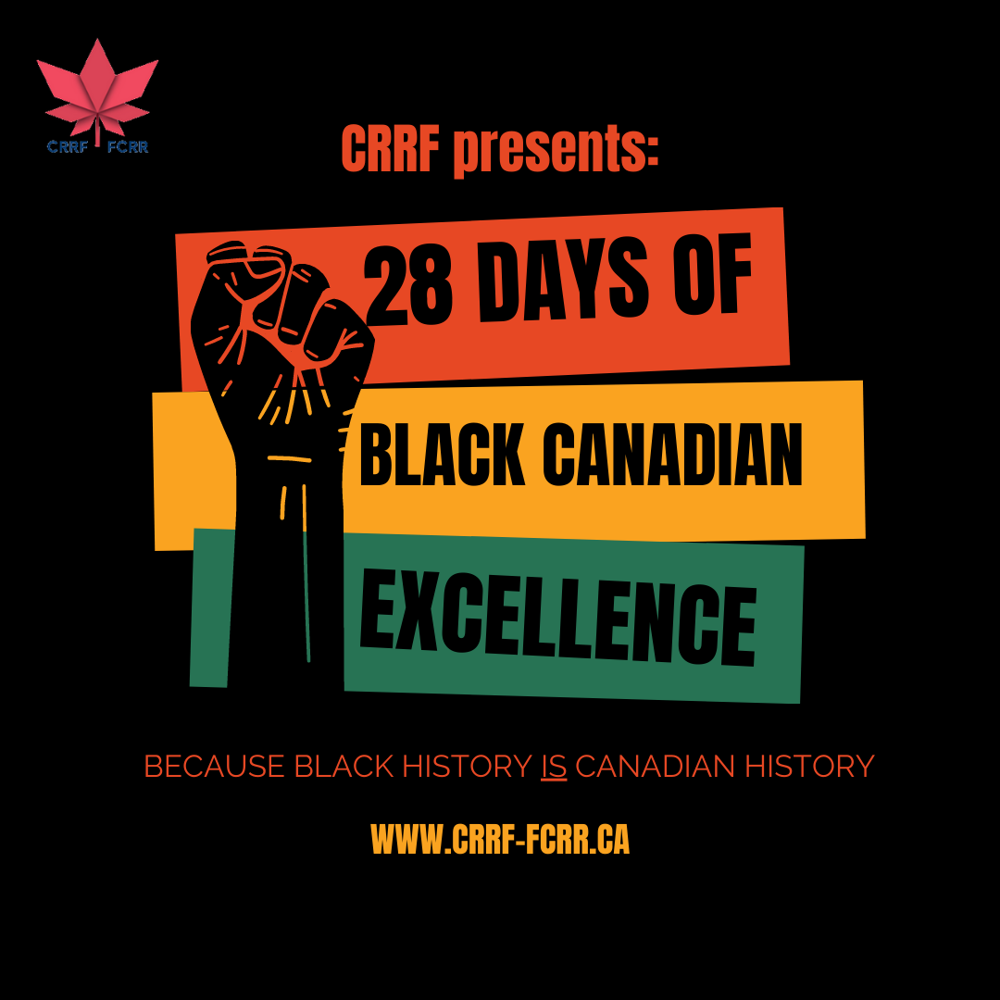
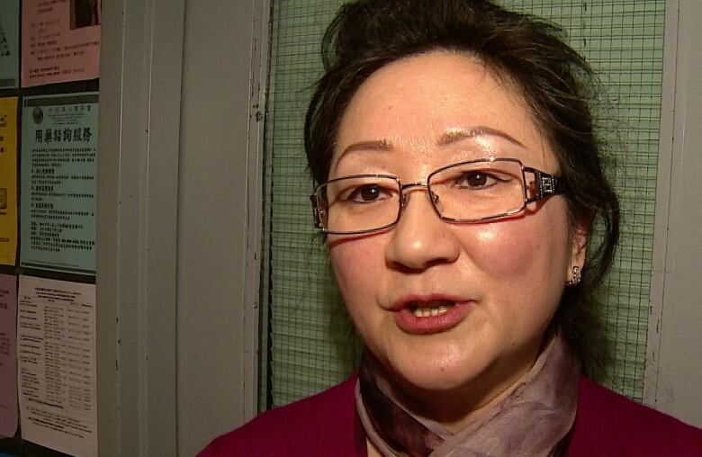
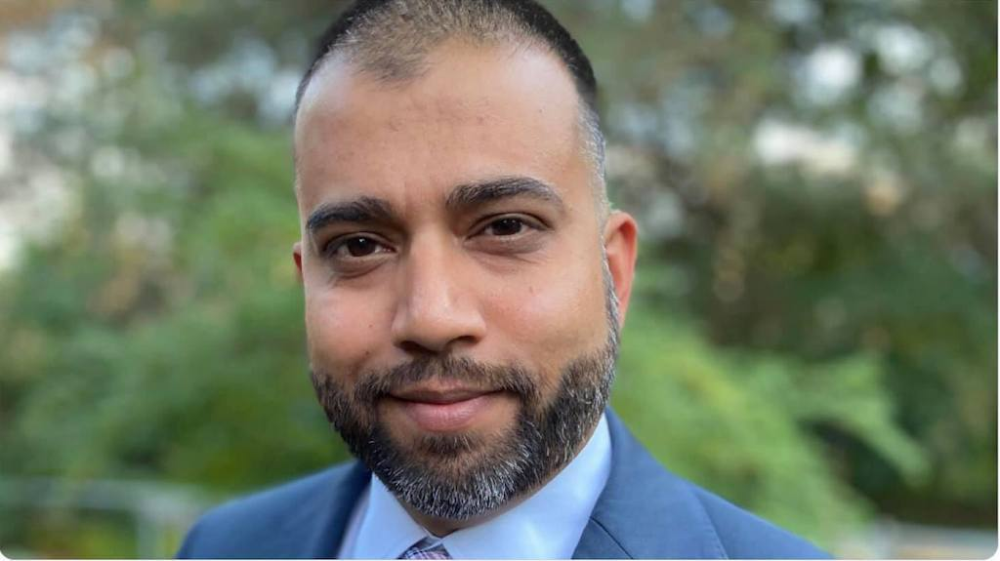

Meet Your Propagandists - Canadian Race Relations Foundation
February 19th, 2021
I was on a meandering path through various propagandists, starting with (((Irwin Cotler))) and the (((Raoul Wallenberg Centre for Human Rights))) when I found my way to the "Canadian Race Relations Foundation". Specifically, I was looking up the hilarious jewy (((Cyber Dissidents))) gay-op on Wikipedia, started by two Jews, David Keyes, and Natan Sharansky. Anyway, their Board of Advisors is an amazing look into Anti-Democracy in Action, and one of their "Board of Advisors," is on something called the "Canadian Race Relations Foundation," so I decided to look into it. Here they are in their own words, according to their website.
TDC_ARTICLE_START
The Canadian Race Relations Foundation is Canada's leading agency dedicated to the elimination of racism and all forms of racial discrimination in Canadian society.
TDC_ARTICLE_STOP
Here's what else you can find directly on the front page of that website.

Clicking on that link brings you to another page, where you can read this.
TDC_ARTICLE_START
TORONTO, February 1st, 2021—Every February, CRRF joins the rest of Canada in a month-long observance of the accomplishments and contributions of Black Canadians from coast to coast. Black History Month in Canada was officially declared on February 1, 1996, making today the 25th anniversary of the observance of this special month on Canadian shores.
“People of African descent have been contributing to the building and cultural make up of Canadian society for the past five centuries,” said CRRF chairperson, Teresa Woo-Paw. “Our organization see it as vital that contributions of Black Canadians not only be seen as important during the month of February, but should be learned and celebrated at every possible opportunity.”
To help Canadians learn more about the contributions of Black Canadians to history, CRRF has launched the social media series, “28 Days of Black Canadian Excellence”, where the life’s work of outstanding Black Canadians, both past and present, are brought to the forefront for the broader public.
“It is only through understanding, education and open dialogue that the accomplishment of all Canadians can be celebrated every day,” said Raymond Tynes, CRRF board member. “That is when we will have truly embraced and lived through the lens of equity and diversity.”
TDC_ARTICLE_STOP
Chairperson Teresa Woo-Paw
The above picture is of Teresa Woo-Paw, a Hong Kong born Social Worker who is now the chair of the Canadian Race Relations Foundation. She's a former politician who at one point represented the Alberta Legislature in Calgary-Northern Hills. Guess which party she represented? If you guessed Progressive-Conservatives, you'd be right.

We need to vote for these people HARDER to show the RADICAL LEFT!
The other important member of this group is Mohammed Hashim.
IQRA:
TDC_ARTICLE_START
Well-known Toronto labour organizer and community advocate, Mohammed Hashim, has been appointed as the new Executive Director of the Canadian Race Relations Foundation.
In the last decade, he has worked in the labour movement, most recently as a senior organizer for the Toronto & York Region Labour Council, where he advocated for a variety of issues, including many anti-racism initiatives.
Hashim has a strong dedication to public policy development in addressing systemic discrimination and has worked to create opportunities for marginalized communities through fellowships and community benefits agreements.
TDC_ARTICLE_STOP

Hey goy, do you think that in all his time as a "Labour Organizer and community advocate," he once advocated for White Workers to get paid more?
 TDC_ARTICLE_START
He is a member of the Board of Trustees of the United Way of Greater Toronto, Treasurer of the Board of Directors of the Urban Alliance on Race Relations and is a founding advisor of the Canadian Anti-Hate Network.
TDC_ARTICLE_STOP
(((Canadian Anti-Hate Network))). If I recall correctly, that's (((Bernie Faber's))) NGO. Well, one of them at least. That's the thing with Schlomo's. You get 3 Heebs together in a room for 3 hours and they've created 6 organizations.
TDC_ARTICLE_START
He is a member of the Board of Trustees of the United Way of Greater Toronto, Treasurer of the Board of Directors of the Urban Alliance on Race Relations and is a founding advisor of the Canadian Anti-Hate Network.
TDC_ARTICLE_STOP
(((Canadian Anti-Hate Network))). If I recall correctly, that's (((Bernie Faber's))) NGO. Well, one of them at least. That's the thing with Schlomo's. You get 3 Heebs together in a room for 3 hours and they've created 6 organizations.
TDC_ARTICLE_START
He is a member of the Board of Trustees of the United Way of Greater Toronto, Treasurer of the Board of Directors of the Urban Alliance on Race Relations and is a founding advisor of the Canadian Anti-Hate Network.
TDC_ARTICLE_STOP
(((Canadian Anti-Hate Network))). If I recall correctly, that's (((Bernie Faber's))) NGO. Well, one of them at least. That's the thing with Schlomo's. You get 3 Heebs together in a room for 3 hours and they've created 6 organizations.